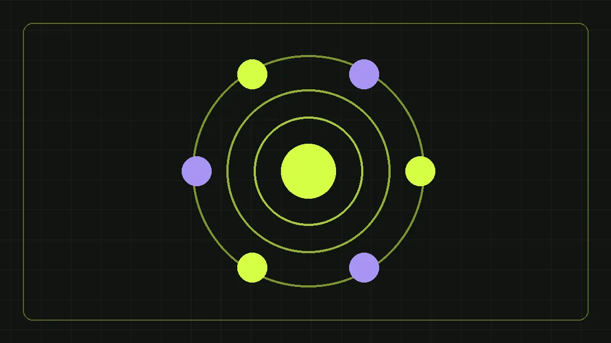

Объясняем сегментацию, реактивацию и триггерные коммуникации понятным языком.
CRM-маркетинг простыми словами
CRM-маркетинг — работа с существующими клиентами и потенциальными покупателями на основе данных об их взаимодействиях с компанией. Его цель — давать релевантную коммуникацию в подходящий момент и улучшать клиентский опыт, а не просто отправлять массовые сообщения.
Из чего состоит система
База данных, понятные этапы воронки, сегменты аудитории, правила коммуникации, контент, интеграции и измерение результата. Чем чище данные и яснее согласия, тем меньше ошибок и бесполезных касаний.
Реактивация базы
Работа с неактивными клиентами начинается с анализа последнего контакта, истории покупок и предпочтений. Затем формируется релевантное предложение и небольшой тестовый сегмент. Отписки, жалобы и продажи должны оцениваться вместе.
Триггерные цепочки
Это сообщения, связанные с конкретным событием: заявка, встреча, отсутствие ответа, покупка или конец периода использования продукта. Правильная цепочка помогает человеку сделать следующий шаг, но не должна заменять живую помощь там, где она нужна.
Как измерять эффективность
Следите за долей повторных заказов, реактивацией, конверсией сообщений, средним чеком, LTV, отписками и жалобами. Избегайте приписывать CRM все продажи: часть клиентов вернулась бы самостоятельно.
С чего начать
Начните с аудита текущей CRM и одной гипотезы для конкретного сегмента. После проверки результата развивайте автоматизацию постепенно.
В чём отличие CRM-маркетинга от простой рассылки
Разовая акция по всей базе почти не учитывает, на каком этапе находится человек. CRM-маркетинг строится вокруг истории отношений: первый интерес, консультация, покупка, внедрение продукта, повторный заказ, снижение активности. Для каждого этапа у клиента своя задача и уместная коммуникация. Например, человеку, который только запросил коммерческое предложение, полезно рассказать об этапах проекта, а давнему клиенту — напомнить о подходящей услуге и предложить поддержку. Система должна знать не только контактный адрес, но и согласованные предпочтения, продукт, историю обращений и ограничения использования данных. Поэтому CRM-маркетинг начинается с качества информации и бизнес-процесса, а не с выбора сервиса массовых сообщений.
Какие данные нужно собирать и зачем
Полезные поля CRM: источник обращения, дата и продукт интереса, статус сделки, ответственный, согласованные каналы связи, последняя активность, дата покупки и причина отказа. Для B2B могут пригодиться отрасль, роль собеседника, размер компании и период планируемой закупки — если эти сведения действительно нужны для работы. Избыточный сбор ухудшает качество базы и повышает риски. Каждому полю задайте цель: какое решение можно принять, имея это значение. Если ответа нет, подумайте, нужно ли поле. Определите, кто обновляет информацию и когда удаляет устаревшие записи. Сотрудники должны работать в корпоративных аккаунтах с разграничением доступа. Импорт личных переписок или случайных списков телефонов без анализа правовых оснований не является корректной настройкой CRM-маркетинга.
Сегментация: не всем клиентам нужно одно и то же
Сегмент — группа контактов с общей потребностью, поведением или этапом сделки. Начните с простого: новые лиды, квалифицированные обращения, действующие клиенты, повторные покупатели, неактивные контакты и отказавшиеся от коммуникаций. Затем добавьте бизнес-логику: интерес к конкретному продукту, тип клиента, дата последней покупки, объём заказа. Не создавайте сотни сегментов, если база небольшая и не хватает данных для уверенных решений. У каждой группы должна быть понятная цель: ускорить ответ, объяснить услугу, вернуть интерес или улучшить сопровождение. Для B2B-разных ролей в закупке сообщения могут различаться: руководитель оценивает экономику, технический специалист — характеристики, закупщик — условия и документы.
Триггеры: какие события запускают сообщения
Триггер — заранее определённое событие, после которого система предлагает следующий шаг. Примеры: отправлена форма, назначена встреча, запрошено КП, истёк согласованный срок ответа, завершена поставка, подходит время обслуживания. Для каждого сценария определите получателя, канал, цель и условие остановки. Если менеджер уже позвонил человеку и договорился о встрече, автоматическая серия «мы не смогли с вами связаться» должна прекратиться. Иначе автоматизация ухудшит опыт вместо улучшения. Перед запуском проверьте граничные случаи: повторная заявка, неверный номер, отписка, закрытая сделка и перенос встречи. Хорошая цепочка не пытается полностью заменить человека, а помогает не терять важные события.
Реактивация базы: как работать с неактивными клиентами
Реактивация — не предложение одинаковой скидки всем, кто давно не покупал. Сначала выясните причину паузы: сезонность, длительный срок использования продукта, смена ответственного, неудовлетворённость или завершение потребности. Выделите контакты, с которыми допустимо возобновить коммуникацию, и выберите релевантное предложение. Небольшой тестовый сегмент поможет оценить отклики и отписки, прежде чем расширять кампанию. Для части B2B-клиентов лучше подойдёт личный звонок менеджера с полезным обновлением, чем автоматическая серия. Отдельно следите за теми, кто отказался от маркетинговых сообщений: отсутствие активности не отменяет требование соблюдать выбор человека. Показателем результата должна быть не только отправка сообщений, но и квалифицированная реакция, встреча, заказ или другое заранее заданное действие.
CRM-маркетинг для длинного B2B-цикла
В корпоративных продажах от первого интереса до договора могут пройти месяцы. За это время контакт изучает предложения, согласует техническое задание, бюджет и закупочную процедуру. CRM помогает фиксировать следующую задачу и не забывать о договорённостях. Маркетинговая автоматизация может добавлять полезные материалы на нужном этапе: инструкцию по подготовке брифа, сравнение вариантов, ответы на технические вопросы, описание процесса внедрения. Важно не отправлять такую информацию всем подряд. Если потребность изменилась, этап сделки должен быть обновлён. Иногда лучший триггер — задача менеджеру связаться лично, а не автоматическая рассылка. Система сильна тогда, когда помогает отделу продаж работать точнее, а не пытается замаскировать отсутствие коммуникации.
Как связать рекламу, сайт и CRM
При отправке формы желательно сохранить источник, кампанию и продукт, который заинтересовал пользователя. После передачи в CRM нужен идентификатор обращения, чтобы не терять связь между визитом и дальнейшей сделкой. Не все рекламные системы используют одинаковую модель атрибуции, поэтому сравнение требует заранее выбранной методики. Если один человек заполнил три формы, не обязательно считать его тремя новыми клиентами. Отдел продаж должен уметь помечать дубль и обновлять контакт. В аналитике полезно разделить события «форма отправлена», «обращение квалифицировано» и «сделка состоялась». Только так можно оценить, какой канал привёл полезный интерес. Переход к автоматизации до исправления передачи данных часто просто ускоряет распространение ошибок.
Какие показатели у CRM-маркетинга действительно важны
Количество отправленных писем — техническая метрика, а не бизнес-результат. Отслеживайте доставляемость сообщений, отписки, жалобы, ответы, реактивации, встречи, повторные покупки и переходы по стадиям воронки. Для B2B особенно полезны скорость первого ответа и доля лидов без назначенного следующего шага. LTV — оценка ценности клиента за период отношений, но её методика должна учитывать маржу, повторяемость заказов и доступность данных. Не следует автоматически приписывать CRM-маркетингу все покупки после отправки письма: часть клиентов вернулась бы без дополнительного касания. Для проверки эффекта используйте сравнимые группы и учитывайте сезонность. Чем прозрачнее методика, тем меньше споров между маркетингом, продажами и финансами.
Риски автоматизации: согласия, отписки и доступы
Хранение контакта в CRM не означает разрешения на любую рекламную коммуникацию. Для выбранного способа продвижения проверьте правовые основания, порядок согласия, возможность его подтвердить и механизм прекращения сообщений. У каждого канала — email, SMS, мессенджера — могут быть дополнительные требования и ограничения платформы. Не копируйте базу во все подряд сервисы без понимания, кто получает доступ к данным и на каких условиях. Список отписавшихся должен синхронизироваться там, где это необходимо, а сотрудники — иметь только нужные права. Обязательно тестируйте сценарии ошибочного обращения не к тому человеку, повторных сообщений и попадания персональных сведений в шаблон. Комплаенс и клиентский опыт — часть качества системы, а не формальная опция.
Что внедрять сначала: приоритеты по эффекту
Начните с карты текущей воронки и поиска самых дорогих потерь. Возможно, проблема не в отсутствии сложных email-цепочек, а в том, что половине заявок никто не назначил ответственного. В первую очередь исправляйте назначение лидов, уведомления о пропущенных обращениях, единые статусы и минимальную аналитику. Затем выберите один сценарий с понятной ценностью: напоминание о согласованной встрече, запрос обратной связи после покупки или работа с неактивными клиентами. Проверьте корректность данных и реакцию аудитории. Только после этого добавляйте ветвления, персонализацию и новые каналы. Резкое внедрение десятков автоматизаций одновременно затрудняет диагностику ошибок и не гарантирует увеличения продаж.
Пример программы внедрения на три месяца
Первый месяц: аудит данных, статусов, источников заявок и прав доступа, выбор одного сегмента. Второй месяц: настройка базовых триггеров, тестирование согласий и отписок, запуск ограниченной серии и проверка качества обработанных обращений. Третий месяц: сравнение результатов с исходной группой, исправление проблем, подключение второго сценария и создание регламента отчётности. Это универсальная схема проекта, а не история клиента и не обещание сроков для любого масштаба. Если CRM уже сложная и содержит множество интеграций, диагностика потребует больше времени. Подключайте сотрудников продаж к тестированию: именно они замечают несоответствие автоматических сообщений реальной истории переговоров.
Частые ошибки CRM-маркетинга
Первая — рассылать всем подряд и считать охват результатом. Вторая — создавать сегменты по недостоверным полям. Третья — не прекращать цепочку после ответа менеджера, сделки или отказа от коммуникации. Четвёртая — не учитывать повторные обращения и считать каждый визит новым клиентом. Пятая — оценивать кампанию только по открытиям писем, не связывая её с коммерческими действиями. Шестая — давать каждому подрядчику полный доступ к клиентской базе без необходимого контроля. Хорошая система начинается с понятных статусов, согласованных бизнес-целей и ответственности за данные. Сложные инструменты имеют смысл только после этого фундамента.
Ответы на частые вопросы
Нужна ли большая база для CRM-маркетинга? Нет, но маленькой базе сложнее разделять аудиторию и делать статистически убедительные выводы. Что лучше: SMS или email? Зависит от сценария, согласий, срочности и поведения клиентов. Может ли CRM сама продавать? Она поддерживает процесс, но не заменяет коммерческое предложение и компетентных менеджеров. Как начать без технического отдела? С аудита статусов, источников и одной простой цепочки. Можно ли оценить LTV сразу? Только приблизительно, если история покупок короткая. Что делать с неактивной базой? Сначала проверить законность коммуникации и причину отсутствия активности, потом тестировать релевантное предложение.
Следующий шаг
Если обращения теряются между сайтом и продажами, начните с аудита статусов и качества данных. Для системной работы с клиентской базой изучите услугу CRM-маркетинга. Если нужна общая стратегия привлечения, удержания и измерения результата, её можно выстроить в рамках маркетинга под ключ. Практическая ценность CRM возникает тогда, когда каждый контакт получает уместное действие и команда может объяснить, почему именно это действие выбрано.
Этот материал находится на согласовании и не индексируется поисковиками, пока редактор не подтвердит факты и источники.
Сделаем план под вашу ситуацию
Обсудим задачи бизнеса и бюджет первых тестов.
Получить маркетинговый план ↗